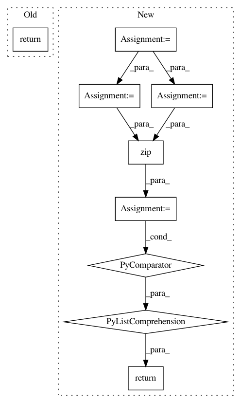

9466fc343c6ba637e67a7f22e60070308929c2b0,deepplantphenomics/loaders.py,,get_dir_images,#Any#,115
Before Change
def get_dir_images(dirname):
return sorted([os.path.join(dirname, f) for f in os.listdir(dirname) if
os.path.isfile(os.path.join(dirname, f)) and (f.endswith(".png") or f.endswith(".jpg"))])
def read_csv_labels(file_name, column_number=False, character=","):
f = open(file_name, "r", encoding="utf-8-sig")
After Change
def get_dir_images(dirname):
dir_files = sorted([os.path.join(dirname, f) for f in os.listdir(dirname)])
is_file = [os.path.isfile(f) for f in dir_files]
is_image = [os.path.splitext(f)[1].lower() in [".jpg", ".jpeg", ".png"] for f in dir_files]
return [f for (f, b1, b2) in zip(dir_files, is_file, is_image) if b1 and b2]
def read_csv_labels(file_name, column_number=False, character=","):
f = open(file_name, "r", encoding="utf-8-sig")
In pattern: SUPERPATTERN
Frequency: 4
Non-data size: 9
Instances
Project Name: p2irc/deepplantphenomics
Commit Name: 9466fc343c6ba637e67a7f22e60070308929c2b0
Time: 2020-01-24
Author: dbl599@mail.usask.ca
File Name: deepplantphenomics/loaders.py
Class Name:
Method Name: get_dir_images
Project Name: matplotlib/matplotlib
Commit Name: 97eceb118ed35175167af15fbc2577d360f5351f
Time: 2019-02-16
Author: anntzer.lee@gmail.com
File Name: lib/matplotlib/axis.py
Class Name: Axis
Method Name: get_minorticklocs
Project Name: matplotlib/matplotlib
Commit Name: 5591ce6fa3cc3e79fa6cee8c75cec87db59a8721
Time: 2019-02-23
Author: jklymak@gmail.com
File Name: lib/matplotlib/axis.py
Class Name: Axis
Method Name: get_minorticklocs
Project Name: tensorflow/minigo
Commit Name: d9815bc9a70bf7362465c5839d082bd2af4b4771
Time: 2019-11-05
Author: tmadams@google.com
File Name: oneoffs/inspect_examples.py
Class Name:
Method Name: ReadExamples